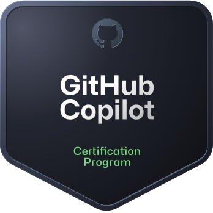
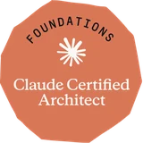
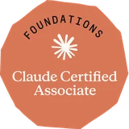
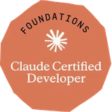

QA Engineer, Middle+
«Проєкт перейшов на LLM, і я не знаю, як тестувати це по-нормальному»
Навчитеся
Побудуєте test strategy для AI-функціональності та навчитеся вимірювати якість там, де немає одного правильного результату.
Програма · AI Quality
Набір відкрито · старт 10.11.2026
Middle+ QA → AI Quality Engineer
Навчіться тестувати системи без одного правильного expected result: LLM, RAG та AI-агенти — від risk strategy до quality gates у production CI/CD.
5 із 12 місць у групі зайнято · залишилось 7
01. Для кого
QA Engineer, Middle+
«Проєкт перейшов на LLM, і я не знаю, як тестувати це по-нормальному»
Навчитеся
Побудуєте test strategy для AI-функціональності та навчитеся вимірювати якість там, де немає одного правильного результату.
Automation QA / SDET
«Хочу конкретний технічний стек для тестування AI, а не „якось протестувати“»
Навчитеся
Зберете власний AI test framework: datasets, evals, LLM-as-a-Judge, assertions, звіти — і вбудуєте його в CI/CD.
Tech Lead / QA Lead
«Боюся production-інцидентів з AI і не знаю, що запитати у команди»
Навчитеся
Отримаєте risk map, coverage matrix і quality gates — інструменти, щоб керувати якістю AI-продукту, а не сподіватися на неї.
02. Результат
03. Програма курсу
21 занять · Практичні завдання · Фінальний проєкт
Курс побудований навколо реальних задач QA в AI-продуктах: від risk strategy та evals до автоматизованих quality gates у CI/CD.
Що змінюється для QA, коли в продукті зʼявляється AI
Розберетеся, чому звичайного pass/fail недостатньо для LLM та AI-агентів. Навчитеся бачити основні типи помилок і розуміти, що саме потрібно перевіряти.
Як побудувати test strategy для AI-продукту
Навчитеся розкладати AI-систему на компоненти й ризики, визначати пріоритети та будувати coverage під реальний продукт.
Як тестувати prompts і context
Навчитеся перевіряти, як зміни prompt та context впливають на результат, і знаходити проблеми до production.
Як оцінювати якість AI-відповідей
Розберетеся, що робити, коли немає одного правильного expected result, і які метрики потрібні саме вашому сценарію.
Як автоматизувати перевірку AI-відповідей
Створите повторювані eval-перевірки та навчитеся знаходити regression після зміни prompt або model.
Як тестувати RAG
Навчитеся визначати, де саме виникла проблема: у retrieval, context чи фінальній генерації відповіді.
Як тестувати довгі діалоги
Знаходитимете втрату контексту, суперечності та деградацію поведінки в multi-step сценаріях.
Як порівнювати різні моделі
Зможете порівнювати моделі за якістю, стабільністю, latency та cost і аргументовано обирати варіант для продукту.
Як використовувати локальні моделі для evals
Дізнаєтеся, коли локальні моделі підходять для QA-задач і як зменшити залежність від дорогих cloud-запитів.
Як використовувати LLM-as-a-Judge
Навчитеся автоматично оцінювати AI-відповіді за допомогою іншої моделі та розуміти межі надійності такого підходу.
Як перевіряти AI на небезпечні сценарії
Проведете базовий red teaming і навчитеся знаходити prompt injection, витік даних та інші security-ризики.
Як тестувати tool calls
Перевірятимете, який tool вибрав агент, з якими параметрами і чи правильно він побудував послідовність дій.
Як аналізувати поведінку агента через traces
Виявлятимете зайві кроки, loops, дорогі запити, latency-проблеми та неправильні tool calls.
Як контролювати якість AI-генерацій: tests, edge cases, review
Розберете практичні сценарії для test generation, edge-case discovery та code review і навчитеся перевіряти якість того, що згенерував AI.
Як зібрати власний AI test framework
Обʼєднаєте datasets, evals, assertions, reports та роботу з різними моделями в одну підтримувану систему.
Як додати AI quality checks у CI/CD
Запускатимете evals у pipeline, задаватимете thresholds і блокуватимете зміни, якщо якість AI-функціональності погіршилась.
Agentic CI/CD
Побудуєте workflow, у якому AI-агент допомагає аналізувати код, review PR та запускати додаткові QA-перевірки.
Автоматичне оновлення тестів і документації
Навчитеся використовувати AI для генерації й оновлення тестів і документації через контрольований review-процес.
Project Review
Отримаєте review архітектури, test strategy, coverage, evals, framework та CI/CD перед фінальним захистом.
Захист проєкту
Покажете повний pipeline у роботі та обґрунтуєте свої engineering decisions: coverage, thresholds, quality gates і залишкові ризики.
04. Фінальний проєкт
Ви самостійно будуєте AI-застосунок і повний цикл його тестування. Усе — у вашому GitHub, готове показати на інтерв’ю або принести у свою команду.
ai-application/AI-застосунок, 300–800 рядків, з Claude Code або CopilotTEST_STRATEGY.mdТест-стратегія на 2–4 сторінки з go/no-go критеріямиcoverage-matrix.xlsxRisk-based coverage matrixevals/llm/ · evals/rag/LLM та RAG evals на golden datasettests/agent/ · tests/security/Agent tests, tool-call checks, red teamingframework/AI test framework з LLM-as-a-Judge і звітом.github/workflows/CI/CD pipeline: quality gates + AI code review + релізagentic-workflow/Agentic QA workflow для review, test generation, документаціїREADME.mdДокументація і чесний опис: де AI допоміг, а де заважав05. Як проходить навчання
Стек курсу
Тільки те, що працює у production — без «оглядових» інструментів
Evals
Агенти та інструменти
Моделі
Security
CI/CD та AI-асистенти
06. Викладач
QA & Performance Architect · AI Agent Development & Testing · 14+ років в IT
Розробляє AI-агентів для SDLC і будує QA-архітектуру для AI-продуктів у US fintech.




07. Вартість
Повна вартість
40 000 грн
Повна вартість програми: 21 заняття, 11–14 тижнів. Матеріали, записи та review вже всередині.
Що входить
Найближчий старт
Розклад занять узгоджуємо з групою перед стартом.
Оплата від компанії
Багато учасників навчаються за рахунок роботодавця. Надамо рахунок, договір і закриваючі документи — просто вкажіть це у заявці.
08. FAQ
Так, на рівні читання і написання простого коду: Python або JavaScript. Ви будете писати evals, assertions і збирати framework — але з підтримкою Claude Code чи Copilot і з review від викладача.
Подивитеся запис і здасте домашнє завдання у своєму темпі. Review отримаєте так само, як і решта групи.
Одне заняття плюс домашнє завдання. Орієнтуйтеся на 4–6 годин на тиждень разом із практикою.
Знадобиться доступ до однієї з cloud-моделей для практики. Окремий модуль присвячений локальним моделям — навчимо зменшувати залежність від дорогих запитів.
Так. Надамо рахунок і документи для оплати юридичною особою — напишіть про це у заявці.
Ми зв’яжемося протягом робочого дня, коротко обговоримо ваш рівень і задачі та підтвердимо місце в групі.
09. Заявка
Залиште контакт — розкажемо про старт, формат і відповімо на питання протягом робочого дня.
Або одразу в Telegram: @qastudy
Заявку отримали. Дякуємо!
Зв’яжемося у Telegram або на email протягом робочого дня, розкажемо про старт і підтвердимо місце в групі.
Набір відкрито · старт 10.11.2026